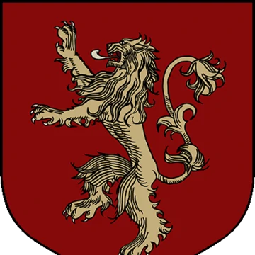
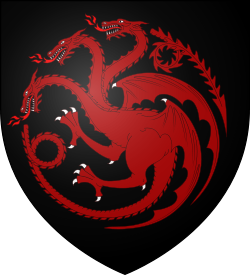

Game of Thrones Main Houses
Stark
 "House Stark of Winterfell is a Great House of Westeros and the royal house of the Kingdom of the North. They rule over the vast region known as the North from their seat in Winterfell. It is one of the oldest lines of Westerosi nobility by far, claiming a line of descent stretching back over eight thousand years. Before the Targaryen conquest, as well as during the War of the Five Kings and early on in Daenerys Targaryen's war for Westeros, the leaders of House Stark ruled over the region as the Kings in the North."
"House Stark of Winterfell is a Great House of Westeros and the royal house of the Kingdom of the North. They rule over the vast region known as the North from their seat in Winterfell. It is one of the oldest lines of Westerosi nobility by far, claiming a line of descent stretching back over eight thousand years. Before the Targaryen conquest, as well as during the War of the Five Kings and early on in Daenerys Targaryen's war for Westeros, the leaders of House Stark ruled over the region as the Kings in the North."
Lannister

"House Lannister of Casterly Rock is one of the Great Houses of Westeros, one of its richest and most powerful families and one of its oldest dynasties. It was also the royal House of the Seven Kingdoms following the extinction of House Baratheon of King's Landing, which had been their puppet house during the War of the Five Kings, for a brief stint of time until House Targaryen took back the Iron Throne in Daenerys Targaryen's war for Westeros."
Targaryen

"House Targaryen of Dragonstone is a noble family of Valyrian descent who once ruled the Seven Kingdoms of Westeros. The Targaryen sigil is a three-headed dragon breathing flames, red on black.[1][2][3] The house words are "Fire and Blood".[4] It eventually became the first royal house of the Seven Kingdoms, as House Targaryen of King's Landing.
The only family of dragonlords who survived the Doom of Valyria, the Targaryens left the Valyrian Freehold twelve years before the Doom. They resided for more than a century at Dragonstone castle on Dragonstone island, until Aegon the Conqueror and his sister-wives, Visenya and Rhaenys, began the first of the Wars of Conquest in 2 BC."